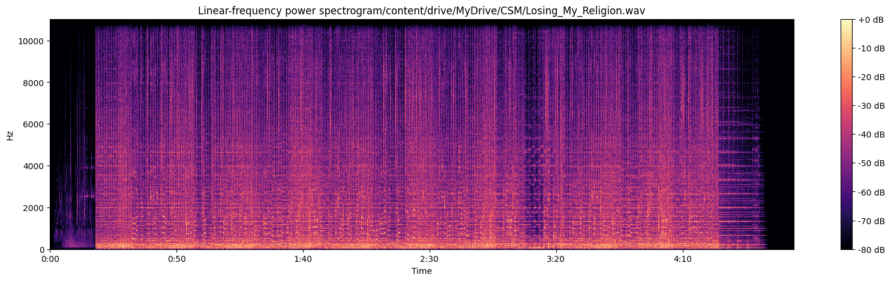
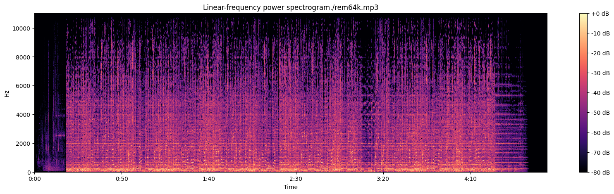
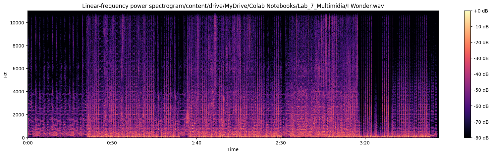

- Verificar várias taxas mpeg 1, camada 3 e conversão entre codecs.
- Variação de tempo.
2. Resultados Gerais
2.1 - Arquivo ABBA - Fernando
2.1.1 - Arquivo Original
a) Espectrograma
b) Codificação áudio - Arquivo Original
Velocidade Original:
Velocidade 2.0x:
2.1.2 - Arquivo codificado a 128kbps
a) Espectrograma
b) Codificação áudio - Arquivo codificado a 128kbps
Velocidade 2.0x:
2.1.3 - Arquivo codificado a 64kbps
a) Espectrograma
b) Codificação áudio - velocidade arquivo codificado 64kbps
Velocidade 2.0x:
2.1.4 - Arquivo codificado a 32kbps
a) Espectrograma
b) Codificação áudio - velocidade arquivo codificado 32kbps
Velocidade 2.0x:
2.1.5 - Arquivo codificado a 16kbps
a) Espectrograma
b) Codificação áudio - velocidade arquivo codificado a 16kbps
Velocidade 2.0x:
2.1.6 - Arquivo codificado a 8kbps
a) Espectrograma
b) Codificação áudio - velocidade arquivo codificado 8kbps
Velocidade 2.0x:
3. Resultados Arquivos Adicionais
3.1 Arquivo R.E.M - Losing My religion (Integrante Ana)
3.1.1 - Arquivo original
a) Espectrograma

b) Codificação áudio - velocidade arquivo original
Velocidade original:
3.1.2 - Arquivo codificado a 128kbps
a) Espectrograma
b) Codificação áudio - velocidade arquivo codificado 128kbps
Velocidade 2.0x:
3.1.3 - Arquivo codificado a 64kbps
a) Espectrograma

b) Codificação áudio - velocidade arquivo codificado 64kbps
Velocidade 2.0x:
3.1.4 - Arquivo codificado a 32kbps
a) Espectrograma
b) Codificação áudio - velocidade arquivo codificado 32kbps
Velocidade 2.0x:
3.1.5 - Arquivo codificado a 16kbps
a) Espectrograma
b) Codificação áudio - velocidade arquivo codificado 16kbps
Velocidade 2.0x:
3.1.6 - Arquivo codificado a 8kpbs
a) Espectrograma
b) Codificação áudio - velocidade arquivo codificado 8kbps
Velocidade 2.0x:
3.2 Arquivo Red Hot Chili Peppers - Scar Tissue - (Integrante Luisa)
3.2.1 - Arquivo original
a) Espectrograma
b) Codificação áudio - velocidade arquivo codificado original
Velocidade original:
3.2.2 - Arquivo codificado a 128kbps
a) Espectrograma
b) Codificação áudio - velocidade arquivo codificado 128kbps
Velocidade 2.0x:
3.2.3 - Arquivo codificado a 64kbps
a) Espectrograma
b) Codificação áudio - velocidade arquivo codificado 64kbps
Velocidade 2.0x:
3.2.4 - Arquivo codificado a 32kbps
a) Espectrograma
b) Codificação áudio - velocidade arquivo codificado 32kbps
Velocidade 2.0x:
3.3.5 - Arquivo codificado a 16kbps
a) Espectrograma
b) Codificação áudio - velocidade arquivo codificado 16kbps
Velocidade 2.0x:
3.3.6 - Arquivo codificado a 8kpbs
a) Espectrograma
b) Codificação áudio - velocidade arquivo codificado 8kbps
Velocidade 2.0x:
3.3 Arquivo Kanye West - I Wonder - (Integrante Randre)
3.3.1 - Arquivo original
a) Espectrograma

b) Codificação áudio - velocidade arquivo codificado original
Velocidade original:
3.3.2 - Arquivo codificado a 128kbps
a) Espectrograma
b) Codificação áudio - velocidade arquivo codificado 128kbps
Velocidade 2.0x:
3.3.3 - Arquivo codificado a 64kbps
a) Espectrograma
b) Codificação áudio - velocidade arquivo codificado 64kbps
Velocidade 2.0x:
3.3.4 - Arquivo codificado a 32kbps
a) Espectrograma
b) Codificação áudio - velocidade arquivo codificado 32kbps
Velocidade 2.0x:
3.3.5 - Arquivo codificado a 16kbps
a) Espectrograma
b) Codificação áudio - velocidade arquivo codificado 16kbps
Velocidade 2.0x:
3.3.6 - Arquivo codificado a 8kpbs
a) Espectrograma
b) Codificação áudio - velocidade arquivo codificado 8kbps
Velocidade 2.0x:
4. Tabela com as taxas de Compressão
Integrante
Original 320KBPS (kB)
128kbps (%)
64kbps (%)
32kbps (%)
16kbps (%)
8bps (%)
Ana
13,946
32,9500%
16,4752%
8,2384%
8,2384%
8,2384%
Luisa
15,36
30,77%
18,52%
8,27%
8,27%
8,27%
Randre
15,719
8,335%
4,16%
2,08%
2,08%
2,08%
A tabela apresenta as taxas de compressão de um arquivo de áudio para diferentes taxas de bits (bitrates) em kilobits por segundo (kbps), e os valores percentuais indicam quanto a versão comprimida é menor em relação à versão original em 320 kbps.
No geral, os valores percentuais indicam o quão eficaz é a compressão em cada taxa de bits. Quanto menor a taxa de bits, maior a compressão, mas também maior a perda de qualidade de áudio. O desafio é encontrar um equilíbrio entre a redução do tamanho do arquivo e a manutenção de uma qualidade de áudio aceitável para o ouvinte.
5. Detalhes sobre a biblioteca libvorbis
1. Tecnologia
- A tecnologia subjacente à libvorbis é baseada no codec de áudio Vorbis, que utiliza a transformada discreta de cosseno (DCT) e técnicas de quantização para comprimir dados de áudio com perda.
2. Diagrama de blocos funcional
- O processo de codificação de áudio usando a biblioteca libvorbis envolve vários estágios, incluindo:
- O sinal de áudio é transformado em seu espectro de frequência.
- Quantização: A informação espectral é representada de forma mais eficiente.
- Codificação de Entropia: Os dados são comprimidos usando códigos de entropia para reduzir ainda mais o tamanho do arquivo.
3. Licenciamento:
- Libvorbis é licenciada sob a GPL, que é uma licença de código aberto. Isso significa que você pode usar, modificar e distribuir a biblioteca de acordo com os termos da GPL. Qualquer software que utilize libvorbis também deve ser distribuído sob os termos da GPL.
4. Taxa de Operação:
- A taxa de operação, ou seja, a taxa de bits resultante do processo de codificação, pode ser ajustada pelos usuários. Isso permite que você equilibre a qualidade do áudio desejada com o tamanho do arquivo resultante.
5. Qualidade Esperada:
- O Vorbis é projetado para proporcionar uma qualidade de áudio comparável ou superior ao MP3 em taxas de bits equivalentes. A qualidade final dependerá das configurações escolhidas durante o processo de codificação.
6. Ferramentas e Utilização:
- A libvorbis é frequentemente utilizada em projetos que necessitam de uma solução de áudio de alta qualidade e código aberto. Muitos players de áudio e softwares de transmissão de áudio na internet usam Vorbis para reprodução e transmissão de conteúdo.